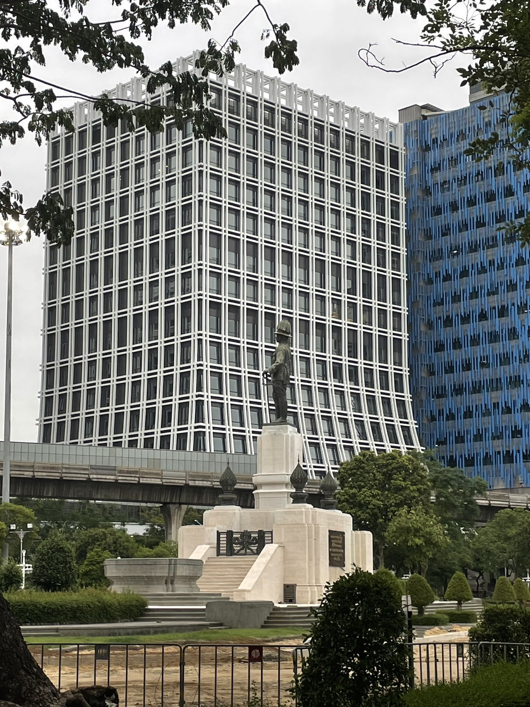

พระบรมราชานุสาวรีย์พระบาทสมเด็จพระมงกุฎเกล้าเจ้าอยู่หัว

“สวนลุม” หรือชื่อเต็ม ๆ ว่า “สวนลุมพินี” ถือได้ว่าเป็นปอดของคนกรุงเทพฯ เพราะเป็นสวนสาธารณะขนาดใหญ่ มีพื้นที่ทั้งหมด 360 ไร่ และยังเป็นสวนสาธารณะแห่งแรกในกรุงเทพฯ อีกด้วย เดิมทีสวนลุมพินีแห่งนี้เป็นพระราชมรดกที่พระบาทสมเด็จพระมงกุฎเกล้าเจ้าอยู่หัวทรงพระราชทานไว้แก่ชาวพระนคร ซึ่งพระองค์ได้สละพระราชทรัพย์และที่ดินส่วนพระองค์มาสร้างเป็นสวนลุมพินีแห่งนี้ โดยชื่อสวนลุมพินีเป็นชื่อพระราชทาน มาจากสถานที่ประสูติของพระพุทธเจ้า ณ ตำบลลุมพินีวัน ประเทศเนปาล
เปิดให้บริการทุกวัน ตั้งแต่เวลา 04.30 – 21.00 น.
พระบรมราชานุสาวรีย์พระบาทสมเด็จพระมงกุฎเกล้าเจ้าอยู่หัว
ห้องสมุดประชาชนสวนลุมพินีเสนอบริการในรูปแหล่งค้นคว้าความรู้จากหนังสือและวิดีทัศน์ เปิดบริการเวลา 08.00 – 20.00 น. วันอังคาร – อาทิตย์
จักรยานน้ำ เป็นจุดบริการของกรุงเทพมหานคร โดยสำนักวัฒนธรรมกีฬาและการท่องเที่ยว อยู่ตรงข้าม เกาะลอยใกล้ห้องสมุด
ในบริเวณใกล้เคียงสวนลุมพินี ยังเป็นที่ตั้งของสถานที่สำคัญหลายแห่ง เช่น